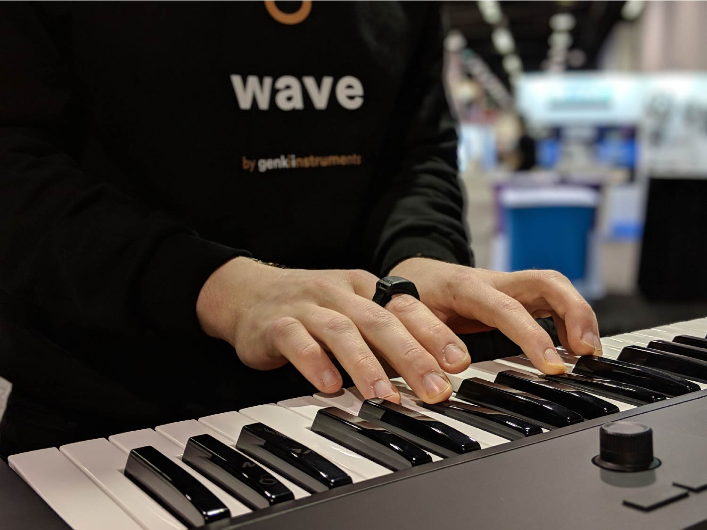

Engineers at Genki Instruments, creators of Wave, an expressive embedded device for music and beyond.
In engineering-speak that means developing everything from hardware and firmware to algorithms and software for end-users.
We mainly use C++, but curious about other systems-level languages. We strive for clean, readable code.
Build boilerplate for a minimal (event driven) concurrent OS.
It should run on bare-metal and have a single thread of execution.
Inspired by our own attempts at building reliable firmware for Wave.
RAII – Deterministic way to manage resources.Templates – Generic compile-time programming.lambdas – Dependency injected, compile-time glue.namespaces – Group together similar code
std::variant / visit – Type-safe dynamic dispatch.
…and many more!
gsl::byte and gsl::span view into raw memory.namespace events { struct data { std::array<std::byte, MaxPacketSize> packet; }; struct button { uint8_t id; bool toggle_state; }; using var_t = std::variant<const data, const button>; using queue = etl::queue<var_t, MaxEventQueueSize>; } events::queue event_queue{}; static void pin_handler(const uint8_t pin_id) { event_queue.push(events::button{pin_id, gpio_pin_read(pin_id)}); } static void data_receive_handler(const uint8_t* const bytes, const size_t size) { events::data event{}; std::copy(bytes, bytes + size, event.packet.begin()); event_queue.push(event); }
Message passing is a form of communication accomplished by queuing events.
std::variant offers many ways to achieve dynamic dispatch, e.g., std::holds_alternative + std::get (exceptional), std::get_if, std::visit…
#include <variant>
// creates helper type for the variant visitor
template<class... Ts> struct visitor : Ts... { using Ts::operator()...; };
template<class... Ts> visitor(Ts...) -> visitor<Ts...>;
// struct visitor {
// void operator()(const int& v) {};
// void operator()(const float& v) {};
// };
void handle_int();
void handle_float();
int main(int argc, char** argv)
{
std::variant<int, float> v;
if (argc == 2) {
v = 42;
} else {
v = 42.0f;
}
std::visit(visitor{
[&](const int&) { handle_int(); },
[&](const float&) { handle_float(); },
}, v);
return 0;
}
std::get_ifstd::visitcmp, nice syntax, exhaustive.#include <tuple>
template<typename... Args, typename Func, std::size_t... Idx>
void for_each_impl(const std::tuple<Args...>& t, Func&& f, std::index_sequence<Idx...>) {
(f(std::get<Idx>(t)), ...);
}
template<typename Tuple, typename F>
constexpr void for_each(Tuple&& tuple, F&& f){
constexpr std::size_t N = std::tuple_size<std::remove_reference_t<Tuple>>::value;
for_each_impl(std::forward<Tuple>(tuple), std::forward<F>(f),
std::make_index_sequence<N>{});
}
void handle_int();
void handle_float();
int main(int argc, char** argv) {
volatile bool scheduler_running = true;
volatile bool task_1_running = true;
volatile bool task_2_running = true;
const auto task_1 = [&] {
const auto needs_work = [&] { return task_1_running; };
const auto process_work = [&]{ handle_float(); };
return std::make_pair(needs_work, process_work);
};
const auto task_2 = [&] {
const auto needs_work = [&] { return task_2_running; };
const auto process_work = [&]{ handle_int(); };
return std::make_pair(needs_work, process_work);
};
const auto task_list = std::make_tuple(task_1, task_2);
while (scheduler_running) {
for_each(task_list, [](const auto& task) {
const auto[needs_work, process_work] = task();
while (needs_work()) {
process_work();
}
});
}
return 0;
}
#include <https://raw.githubusercontent.com/boost-experimental/sml/master/include/boost/sml.hpp> #include <cstdint> void ui_indicate_shutdown(); void system_shutdown(); namespace events { struct button { uint8_t id; bool toggle_state; }; } struct two_button_shutdown { static constexpr uint8_t ButtonX = 0; static constexpr uint8_t ButtonY = 1; auto operator()() const { using namespace boost::sml; using namespace events; const auto is_x_pressed = [](const auto& e) { return e.id == ButtonX && e.toggle_state; }; const auto is_y_pressed = [](const auto& e) { return e.id == ButtonY && e.toggle_state; }; const auto is_x_released = [](const auto& e) { return e.id == ButtonY && !e.toggle_state; }; const auto is_y_released = [](const auto& e) { return e.id == ButtonY && !e.toggle_state; }; const auto shutdown = [] { system_shutdown(); }; const auto indicate_shutdown = [] { ui_indicate_shutdown(); }; return make_transition_table( *"none_pressed"_s + event<button>[is_x_pressed] = "x_pressed"_s, "none_pressed"_s + event<button>[is_y_pressed] = "y_pressed"_s, "x_pressed"_s + event<button>[is_x_released] = "none_pressed"_s, "y_pressed"_s + event<button>[is_y_released] = "none_pressed"_s, "x_pressed"_s + event<button>[is_y_pressed] / indicate_shutdown = "both_pressed"_s, "y_pressed"_s + event<button>[is_x_pressed] / indicate_shutdown = "both_pressed"_s, "both_pressed"_s + event<button>[is_x_released] = "terminating_y_pressed"_s, "both_pressed"_s + event<button>[is_y_released] = "terminating_x_pressed"_s, "terminating_x_pressed"_s + event<button>[is_x_released] / shutdown = X, "terminating_y_pressed"_s + event<button>[is_y_released] / shutdown = X ); } }; int main(int argc, char** argv){ boost::sml::sm<two_button_shutdown> sm; static_assert(sizeof(sm) == 11); sm.process_event(events::button{0, true}); sm.process_event(events::button{1, true}); sm.process_event(events::button{0, false}); sm.process_event(events::button{1, false}); }
namespace sml = boost::sml; struct MyLogger { template<class SM, class TEvent> void log_process_event(const TEvent&) { LOG("[%s][process_event] %s\n", sml::aux::get_type_name<SM>(), sml::aux::get_type_name<TEvent>()); } template<class SM, class TGuard, class TEvent> void log_guard(const TGuard&, const TEvent&, bool result) { LOG("[%s][guard] %s %s %s\n", sml::aux::get_type_name<SM>(), sml::aux::get_type_name<TGuard>(), sml::aux::get_type_name<TEvent>(), (result ? "[OK]" : "[Reject]")); } template<class SM, class TAction, class TEvent> void log_action(const TAction&, const TEvent&) { LOG("[%s][action] %s %s\n", sml::aux::get_type_name<SM>(), sml::aux::get_type_name<TAction>(), sml::aux::get_type_name<TEvent>()); } template<class SM, class TSrcState, class TDstState> void log_state_change(const TSrcState& src, const TDstState& dst) { LOG("[%s][transition] %s -> %s\n", sml::aux::get_type_name<SM>(), src.c_str(), dst.c_str()); } }; Logger logger{}; sml::sm<two_button_shutdown, sml::logger<MyLogger>> sm{logger};
